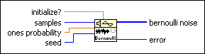

Bernoulli Noise VI
Owning Palette: Signal Generation VIs
Requires: Full Development System
Generates a pseudorandom pattern of ones and zeros. LabVIEW computes each element of bernoulli noise as if flipping a coin weighted by ones probability.

 Add to the block diagram Add to the block diagram |
 Find on the palette Find on the palette |


 , of the pseudorandom sequence:
, of the pseudorandom sequence: